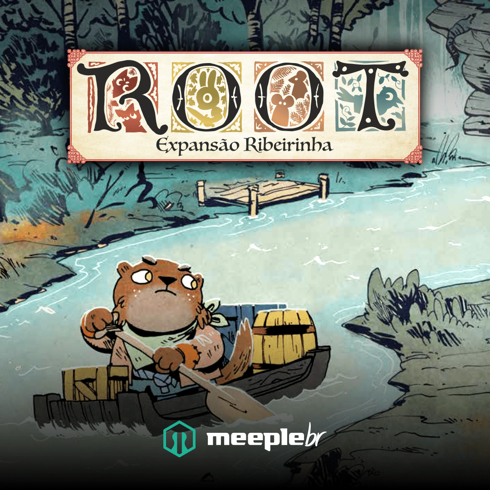
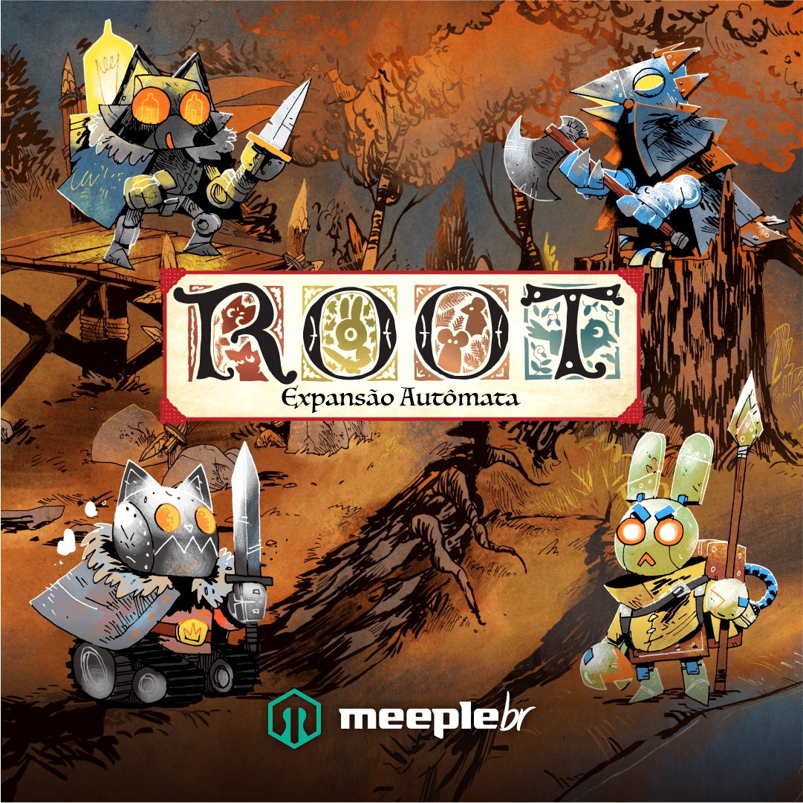
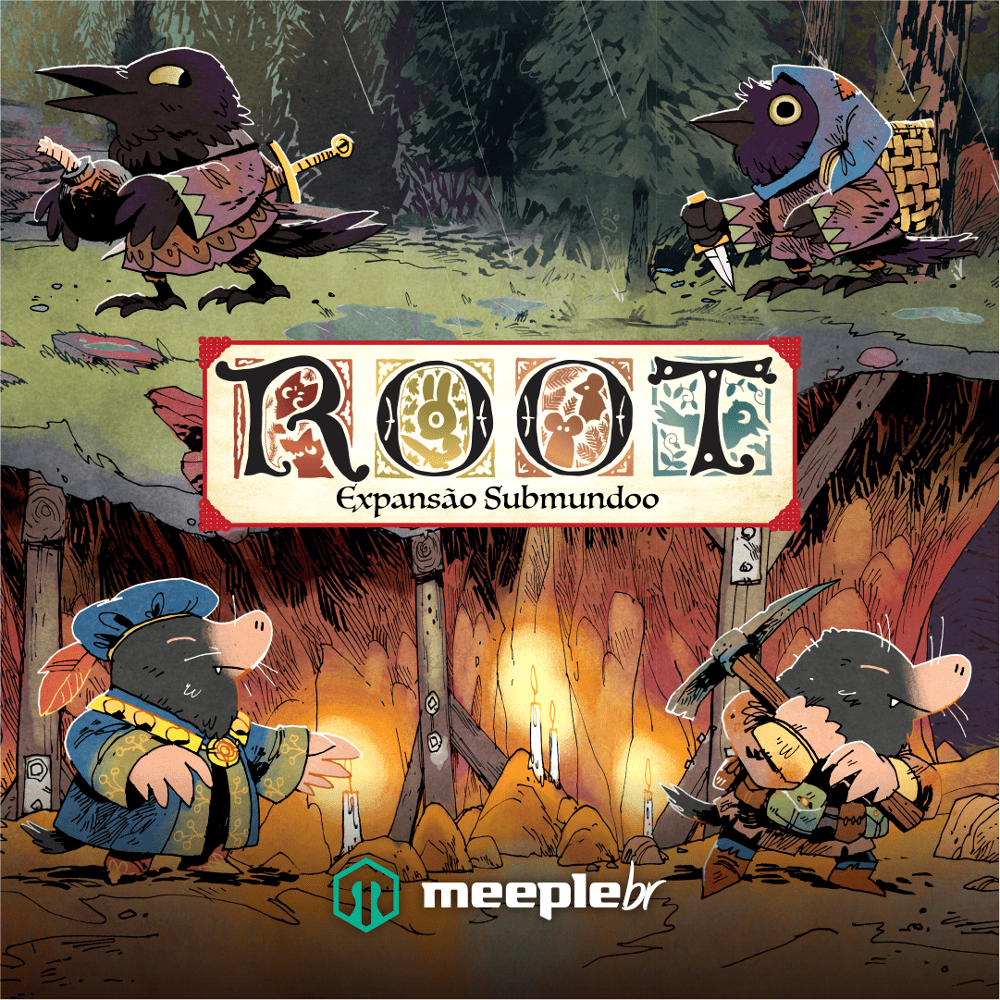
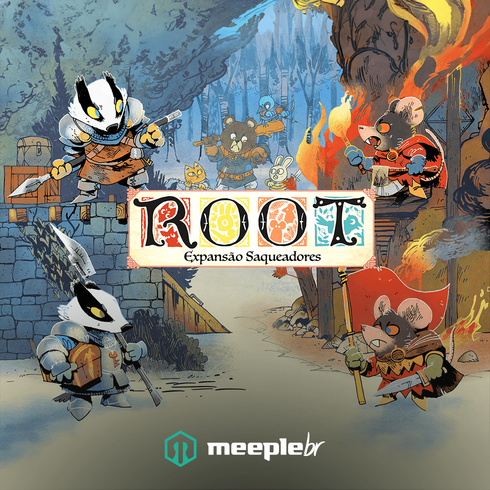
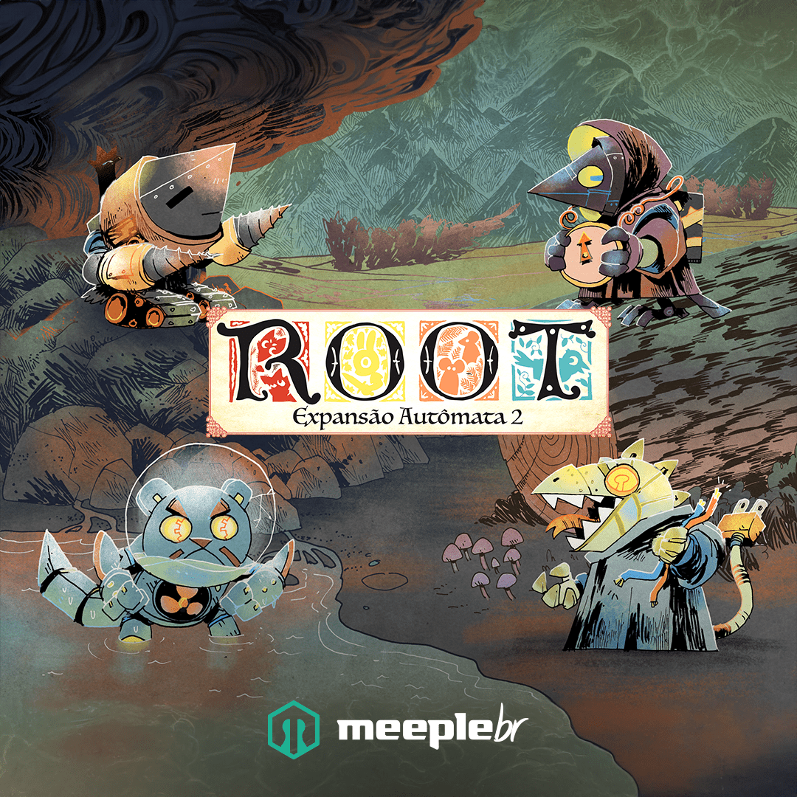

Ribeirinhos
Os Lagartos Cultistas e os Ribeirinhos são as novas facções que entraram no conflito. eles acrescentam novas estratégias de jogo, aumentando ainda mais a diversidade que já é uma marca registrada do Root.
Ver na MeepleBRAs expansões adicionam facções, mapas e novas regras ao jogo base.

Os Lagartos Cultistas e os Ribeirinhos são as novas facções que entraram no conflito. eles acrescentam novas estratégias de jogo, aumentando ainda mais a diversidade que já é uma marca registrada do Root.
Ver na MeepleBR
Root: Expansão Autômata permite que os jogadores enfrentem 4 facções automatizadas inimigas. Adicione uma delas para completar uma partida com poucos jogadores ou contra elas, em uma partida cooperativa!
Ver na MeepleBR
A caixa de Root: Expansão Submundo inclui duas novas facções; um novo mapa frente e verso com lagos e montanhas; e centenas de novas configurações de jogo!
Ver na MeepleBR
Jogue como uma das duas novas facções: Senhor das Centenas: oprima a Floresta da Madeira e queime-a inteira, caso necessário. Você não aceitará dissidentes. Guardiões de Ferro: lidere sua ordem exilada de cavaleiros devotos em batalha para recuperar relíquias antigas. Pela glória!
Ver na MeepleBR
Root: Expansão Autômata 2 é uma expansão que lhe permite jogar contra 4 facções automatizadas. Adicione uma para arredondar a quantidade de jogadores de uma partida com poucos jogadores ou junte-se em uma partida cooperativa!
Ver na MeepleBR